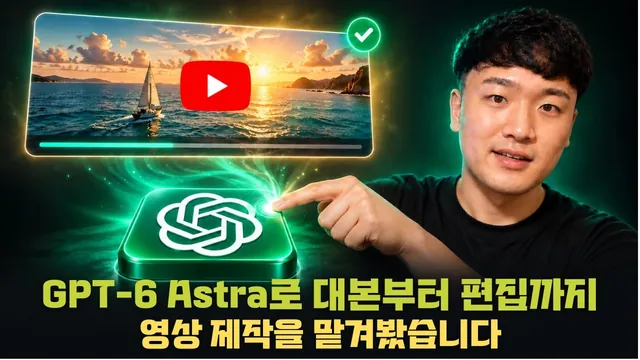

GPT 6 Astra로 유튜브 영상 처음부터 끝까지 딸깍하면 퀄리티가 어느 정도인지 알아보자 (프롬프트 제공)

원본 영상 보기 →
- 역할 분담이 핵심이에요
- 컴퓨터 유즈가 반복 실습·녹화 작업을 대체해요
- 비용은 토큰을 아끼는 것보다 설계가 우선입니다
한 줄 요약
GPT-6 아스트라에게 대본부터 목소리, 편집까지 광고 영상 제작 전 과정을 통째로 맡겨 봤어요. 그 결과와 함께 실제 비용·시간·검수 팁을 공개합니다.
전체 내용 정리
왜 통째로 맡겼을까요
호스트는 이전에 화제였던 '신비한 건축 사전' 류의 자동 생성 영상을 보고 직접 시도해 봤습니다. 그런데 소재 발굴부터 대본 작성, 장면별 프롬프트 작성, 편집까지 손이 너무 많이 가는 과정에 부딪혔어요.
그래서 이번에는 도구를 미리 연결해 둔 GPT-6 아스트라에게 컨셉만 주고 나머지 과정을 맡겼습니다.
그가 실제로 한 일은 두 가지뿐이에요. 원하는 결과를 말로 설명하고, 완성된 영상을 보며 고칠 점을 짚어 주는 것. 건축 대신 "사라진 세계를 복원하는 다큐멘터리"라는 방향을 잡고 진행했습니다.
세 가지 데모 영상
첫째, 폼페이 다큐. 사라진 가게를 복원하는 영상으로, 폐허 위에 벽과 지붕이 돌아오고 사람들이 모이는 장면을 연출했어요. 호스트가 정한 건 "사라진 세계 복원"이라는 방향과 참고 영상 수준의 퀄리티뿐입니다. 폼페이 가게 선정부터 폐허→복원 전환, 내부 단면을 보여 주는 장면 구성, 장면별 카메라 좌표까지 전부 아스트라가 설계했어요.
둘째, 게임 + 시네마틱. 아스트라가 실제로 작동하는 미니게임 코드를 작성하고, 영상 생성 도구가 시네마틱 장면을 만든 뒤 둘을 이어 붙였습니다.
셋째, 운하 갑문 설명. 갑문의 작동 원리를 미니어처 단면으로 보여 주는 세로형 영상이에요. 배가 갑문에 들어오면 문이 닫히고 물이 차오르며 배가 떠올라 다음 구간으로 이동하는 과정을 다뤘습니다.
아스트라와 도구들의 역할 분담
아스트라는 오픈AI의 GPT-6 모델로, 추론과 코딩, 도구 사용을 묶어 복잡한 작업을 결과물까지 이어가도록 설계됐어요. 특히 컴퓨터 유즈 기능으로 화면을 읽고 다음에 누를 동작을 스스로 판단하며 작업을 이어갑니다. 오픈AI도 화면 판단이 필요한 작업에 아스트라를 권장한다고 밝혔고요.
이번 제작에서는 아스트라가 전체 순서를 스스로 짰어요. 조사와 대본 작성 뒤 영상 생성 도구로 장면을 만들고, PC오디오로 목소리를 만든 다음, 하이퍼프레임스로 편집까지 연결하는 식입니다.
게임 구현과 파일 편집, 렌더링은 코덱스의 로컬 환경에서 진행했고, 브라우저 조작과 화면 확인은 컴퓨터 유즈 기능으로 처리했어요.
채팅창 안에서 실제로 실행해 봤어요
영상에서는 실제 연결 과정도 시연합니다.
영상 생성 도구의 공식 MCP 페이지에서 챗GPT 탭을 열고, 플러그인 디렉터리에서 도구를 추가한 뒤 기존 계정으로 로그인하는 방식이에요. 연결 후에는 새 대화에서 영상을 만들어 달라고 요청해 실제 생성 도구가 실행되는지 확인해야 한다고 짚습니다. 생성에는 해당 도구 계정의 크레딧이 사용되고요.
호스트는 아스트라를 선택해 폼페이 가게가 복원되는 8초 영상을 요청했어요. 아스트라가 폐허→복원→완성 장면으로 시간을 나눠 도구를 호출했고, 생성 중 카드가 뜬 뒤 완성된 영상과 실행 기록을 채팅창에서 함께 확인할 수 있었습니다.
사람이 개입한 지점은 '검수'뿐이었어요
호스트가 강조한 건 장면별 지시문을 직접 쓰는 대신, 나온 결과를 보고 고칠 부분만 짚는 방식입니다.
폼페이 영상에서는 카메라, 카운터, 항아리 위치를 지정해 이전 장면과 같은 공간처럼 보이는지를 확인했어요. 갑문 영상에서는 수위가 같아진 뒤 문이 열리는지, 물이 차면서 배가 올라가는지 등 설명의 정확성을 점검했고요.
게임+시네마틱 영상에서는 "나레이션 없이 음악으로 가는 게 낫지 않을까, 모션도 중복되는 부분이 있다"는 피드백만 전달했습니다. 그 결과 나레이션이 빠지고 반복 장면이 정리되면서 42초였던 영상이 24.7초로 줄었어요.
완성 파일에서는 자막의 용어·숫자 표기, 음성 누락이나 검은 화면 여부까지 직접 열어 확인했습니다.
비용과 시간은 이랬어요
영상 생성 비용은 폼페이 612크레딧, 갑문 504크레딧, 게임·시네마틱 234크레딧으로 합계 1,350크레딧이었습니다. 공개된 연간 요금제 단가로 환산하면 세 편 합쳐 약 26.10달러예요(음성·편집 도구 비용은 별도이고, 실제 결제 금액과는 다른 환산치입니다).
이 소개 영상 제작에 사용된 아스트라 토큰량은 반복 문맥을 포함해 약 1,630만 토큰이었고, 대부분 캐시된 입력이라 캐시 할인 API 요금으로 환산하면 약 22.16달러였어요.
제작 시간은 요청부터 초안과 자료 전달까지 50분 42초였습니다. 로그인·생성 대기·렌더링·검수를 모두 포함한 경과 시간이고, 최초 초안 기준이라 후속 수정 작업 시간은 제외됐어요.
핵심 인사이트
- 역할 분담이 핵심이에요: 사람은 "무엇을 만들지"와 "무엇이 틀렸는지"만 판단하고, 장면별 프롬프트 작성·도구 호출·편집 실행은 AI가 전담하는 구조라 도구 사이를 오가는 시간이 크게 줄었습니다.
- 컴퓨터 유즈가 반복 실습·녹화 작업을 대체해요: 화면 클릭 시연이나 화면 레코딩처럼 손이 많이 가던 작업을 아스트라가 화면을 보고 판단해 직접 수행할 수 있습니다. 지침과 정책만 잘 정의하면 사무직 반복 업무 상당수를 자동화 대상으로 볼 수 있어요.
- 비용은 토큰을 아끼는 것보다 설계가 우선입니다: 호스트는 무조건 저비용을 좇기보다 반복 가능한 요소를 먼저 정의해 두는 편이 장기적으로 비용 대비 효과가 크다고 조언해요.
오늘 당장 해볼 것
- 영상 하나를 자동화 제작으로 시도하기 전에 "누구에게 무엇을 보여 줄지, 형식은 무엇인지, 쓸 도구·예산·받을 파일"을 먼저 문장으로 정리해 보세요.
- 결과물이 나오면 장면별 지시문을 다시 쓰는 대신, 이전 장면과 같은 공간처럼 보이는지·숫자와 설명이 맞는지처럼 "확인 체크리스트" 관점으로 검수하는 습관을 들이세요.
- 블로그 글, 스레드 글, 유튜브 자막, 컨설팅 기록처럼 그동안 쌓아 온 자료를 한곳에 정리해 두세요. 이후 컴퓨터 유즈 기반 자동화에 재료로 바로 쓸 수 있습니다.